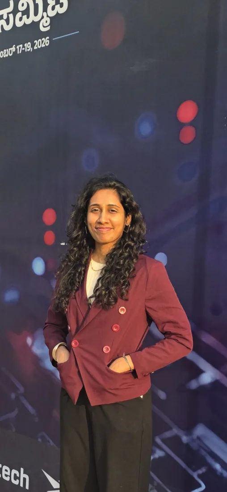
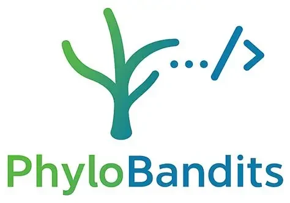

Where biology meets intelligent innovation.
I build computational research workflows, scientific software, and data-driven solutions across multi-omics, drug discovery, molecular modeling and biomedical AI.

Bioscience, data & innovation at scale.
I'm a computational biologist, scientific technology builder, founder, and mentor translating complex biological questions into practical research solutions. My work spans molecular simulation, biomarker discovery, AI/ML, systems biology, and scientific software.
I independently build computational tools and research workflows, collaborate on scientific problems, and support researchers and startups in turning ideas into working solutions.

PhyloBandits LLP
A founder-led scientific technology venture focused on computational biology and research-oriented solutions. Explore my related tools and projects below.
Explore What I've Built ↗Scientific projects & tools
Explore research, independently built software and founder projects. Scientific artwork is illustrative; publication and repository links open the source where provided.
Publications & writing
Explore 14 supplied bibliography entries, including journals, chapters, protocols and manuscripts. My broader reported research output is 16 publications.
Scientific consulting & development
From research concept to working computational solution.
Multi-Omics & Bioinformatics
Proteomics, RNA-seq, biomarker identification, functional enrichment and pathway analysis.
Biomedical AI / ML
Predictive modeling, graph learning, statistical workflows and interpretable analysis.
Drug Discovery
Molecular docking, screening, QSAR, dynamics and binding-energy workflows.
Scientific Software
Custom Python-based computational tools, research dashboards and workflow automation.
Systems Biology
Metabolic network modeling, SBML/COPASI simulations and mechanistic workflows.
Research Strategy & Mentorship
Methods planning, scientific troubleshooting, workshops and startup guidance.
Making advanced research accessible.
I train and mentor students and researchers internationally, supporting computational research skills, project development and scientific problem-solving. I also mentor early-stage startups.
Enquire About Training ↗Students and researchers trained overseas (reported)
Let's build something impactful.
Scientific consulting · Research collaborations · Software development · Training